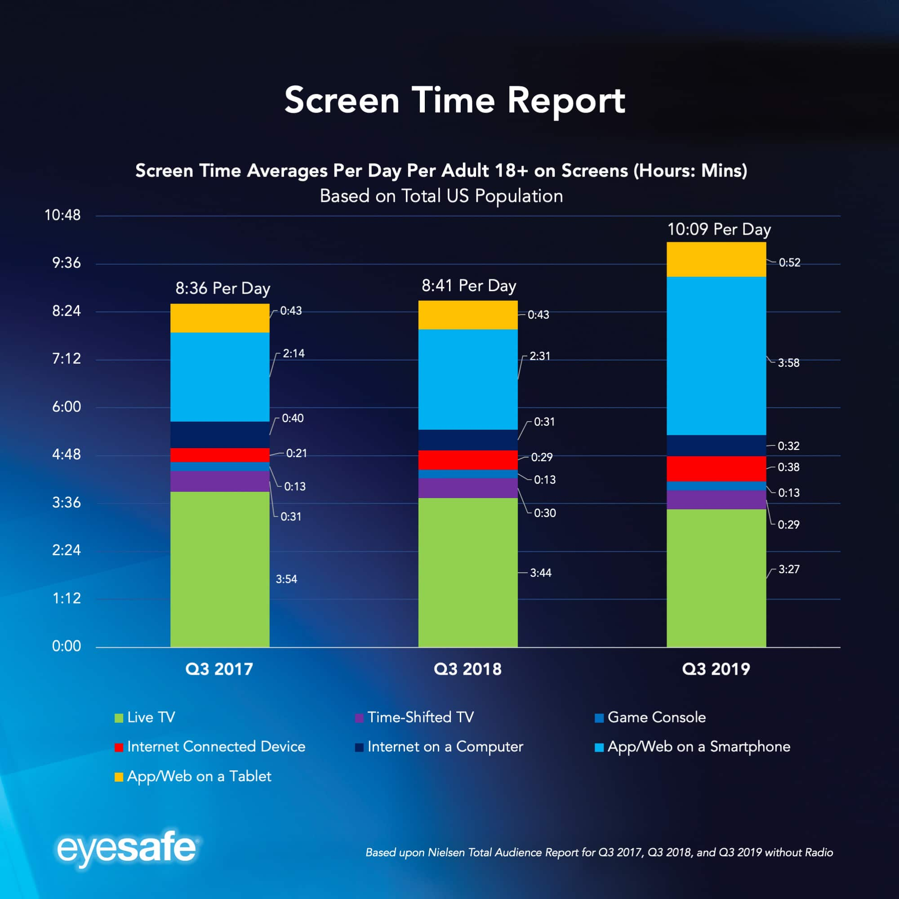
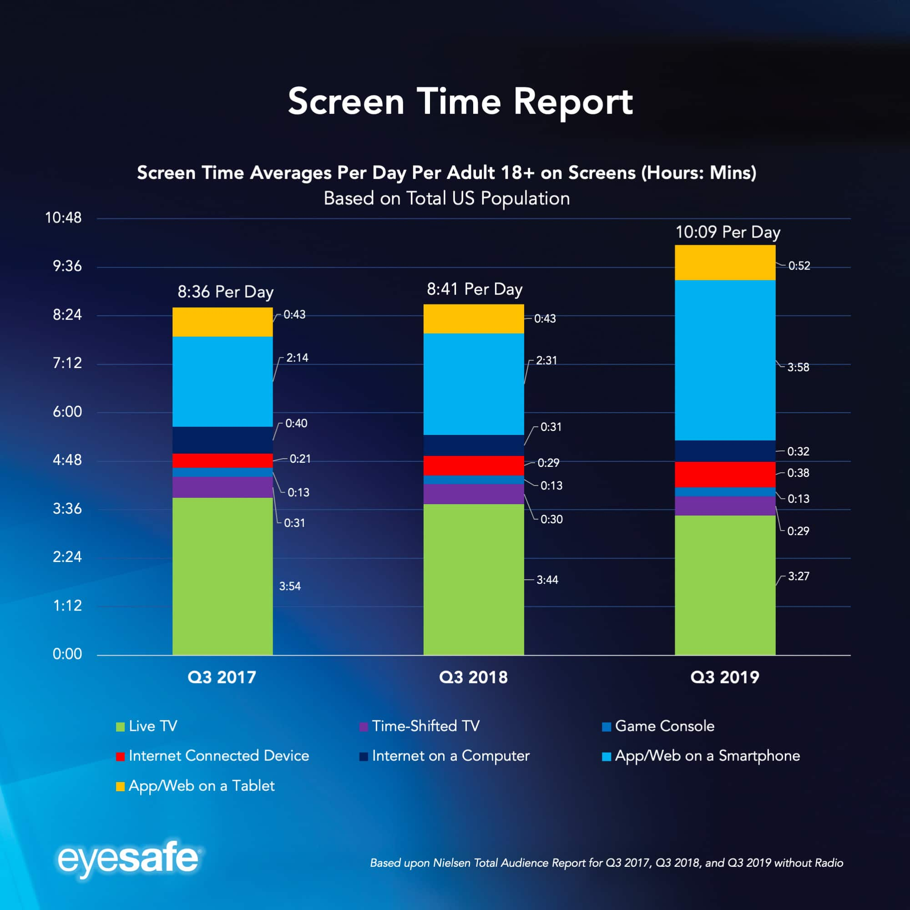
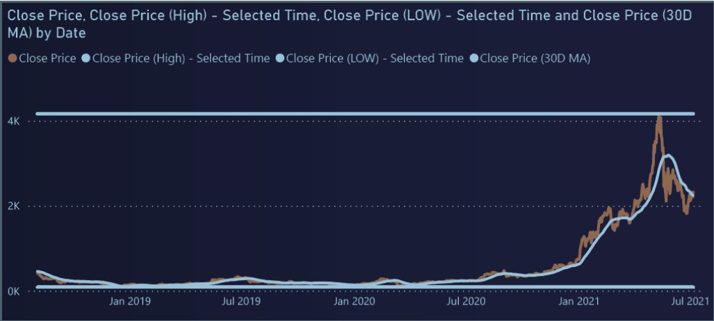

May 5, 2023
This project involves analyzing a dataset of movies to gain insights into audience preferences and successful movie characteristics, using techniques such as data visualization, clustering, and regression analysis. The goal is to inform decision-making in the movie industry, improve revenue, and enhance movie ratings.
 

This project involves analyzing screen time data to understand user behavior and habits. Various data visualization techniques and time-series analysis are used to gain insights into how people spend their time on different devices.

"I embarked on a data analysis project where I leveraged Tableau to create an interactive cryptocurrency dashboard. The project aimed to dissect the historical price data of top cryptocurrencies, offering valuable insights into market dynamics. Through meticulous data collection and visualization techniques, I uncovered several key findings. Bitcoin (BTC) emerged as the market leader, with Ethereum (ETH) closely trailing. Notably, in 2021, BTC reached a remarkable all-time high of nearly $60,000, surpassing other cryptocurrencies by a significant margin. Further analysis revealed intriguing patterns of golden crosses and death crosses in the price trends of BTC and ETH, providing valuable market trend insights. Additionally, Tether (USDT) displayed high volatility with numerous crossing patterns. This project exemplified my data analysis skills and proficiency in Tableau as a powerful tool for uncovering cryptocurrency market trends."

This project involved importing essential libraries like numpy and pandas, performing extensive Exploratory Data Analysis to understand user behavior, and leveraging Collaborative Filtering techniques to deliver precise movie recommendations. I created a user-movie matrix, identified the most-rated movie, and filtered results for quality.
The result: An effective system that enhances user experience by suggesting similar movies, exemplified by recommending alternatives to popular movies like 'Star Wars (1977)' and 'Liar Liar (1997).' This project underscores my ability to turn data into actionable insights, offering valuable solutions in the realm of recommendation systems.
This Project invloves in Developing and evaluating machine learning models to detect credit card fraud using an imbalanced dataset of September 2013 European card transactions, aiming for accurate fraud identification while managing class imbalance.
This project aims to classify iris flower species using the K Nearest Neighbors (KNN) algorithm, including data exploration, preprocessing, model training, evaluation, and visualization for interpretation.